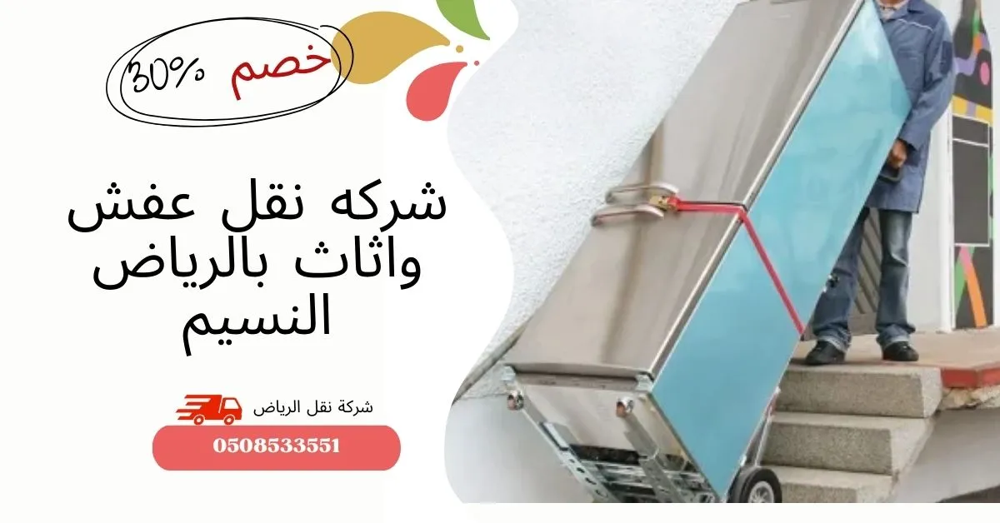

شركه نقل عفش واثاث بالرياض النسيم

عندما يتعلق الأمر بنقل الأثاث والعفش في الرياض لأهالي المملكة الكرام فأنت ستبحث عن أرقام شركات نقل أثاث بالرياض، حيث يصبح اختيار شركة موثوقة أمرًا في غاية الأهمية وخاصًة في حي النسيم بالرياض، حيث توفر شركة نقل عفش واثاث بالرياض النسيم خدمات متكاملة تضمن نقل ممتلكاتك بأمان وسرعة، فـ هي تعتمد هذه الشركات على فرق عمل مدربة وأدوات متقدمة لتقديم تجربة نقل مريحة وخالية من التوتر، لذلك إذا كنت تبحث عن خدمات نقل احترافية تحمي أثاثك من التلف وتضمن وصوله إلى وجهته الجديدة بأفضل حال، فإن اختيار شركه نقل عفش واثاث بالرياض النسيم مناسبة هو الخطوة الأولى لتحقيق ذلك.
شركه نقل عفش واثاث بالرياض النسيم
إذا كنت تريد التنقل إلى مدينة أخرى وتبحث عن راحة البال ونقل خالي من المتاعب، فإن الاعتماد على شركة نقل الأثاث بالرياض هو القرار الأفضل، حيث تعد شركة نقل عفش واثاث بالرياض النسيم واحدة من أفضل الخيارات لنقل الأثاث بفعالية وكفاءة، فـ هي تتميز بتقديم خدمات شاملة تشمل فك الأثاث، تغليفه بمواد عالية الجودة، ونقله باستخدام سيارات مخصصة للنقل الآمن، كما تركز الشركة على توظيف فرق محترفة ومدربة لضمان تنفيذ كل خطوة بدقة واحترافية، وتهتم أيضًا باستخدام أحدث التقنيات والأدوات التي تحمي الأثاث من الخدوش أو التلف أثناء النقل، كما توفر شركه نقل عفش واثاث بالرياض النسيم أيضًا خدمات التركيب في الموقع الجديد، مما يوفر على العملاء الوقت والجهد.
خدمات شاملة لنقل الأثاث بالرياض النسيم
توفر شركه نقل عفش بين المدن السعودية خدمات متكاملة تلبي جميع احتياجات العملاء، مما يجعل عملية الانتقال سهلة ومريحة، كما تهتم هذه الشركات بتقديم حلول شاملة تغطي جميع مراحل النقل، بدءًا من التخطيط وحتى الترتيب النهائي في الموقع الجديد، كما تعمل فرق محترفة على فك الأثاث وتغليفه بعناية باستخدام مواد متينة تحميه من الخدوش والتلف أثناء النقل بالإضافة إلى ذلك، يتم تحميل الأثاث ونقله باستخدام عربات مجهزة بأنظمة أمان متقدمة، لضمان وصوله بأمان إلى وجهته الجديدة، كما أنها تقدم خدمة تركيب الأثاث بعد النقل لضمان راحة العملاء، وبفضل هذه الخدمات المتنوعة جعلت نقل الرياض شركه نقل عفش واثاث بالرياض النسيم من الشركات الرائدة في هذا المجال، وتضمن تجربة نقل احترافية وخالية من المتاعب.
الخدمات المتوفرة في شركة نقل عفش واثاث بالرياض النسيم
- فك الأثاث وتغليفه بمواد مخصصة.
- نقل الأثاث باستخدام شاحنات آمنة.
- تركيب الأثاث في الموقع الجديد.
- تخزين الأثاث عند الحاجة.
- تنظيف وتجهيز المساحات الجديدة.
مزايا الاعتماد على شركات النقل المتخصصة
توفر الاستعانة بشركات النقل المتخصصة للأفراد والشركات، العديد من الفوائد التي تجعل عملية نقل الأثاث أو البضائع أكثر أمانًا وكفاءة كما تساعدهم على توفير الوقت والجهد، حيث تمتلك هذه الشركات فرق عمل مدربة على التعامل مع مختلف أنواع الأثاث، بما في ذلك القطع الكبيرة والثقيلة، مع الحفاظ على سلامتها خلال جميع مراحل النقل، كما تستخدم شركه نقل عفش واثاث بالرياض النسيم معدات حديثة مثل الروافع والشاحنات المجهزة لضمان سلامة الأثاث وتسهيل نقله بسرعة وأمان بالإضافة إلى ذلك، توفر هذه الشركات خدمات إضافية تشمل فك الأثاث وتغليف بمواد متينة، وتركيبه في الموقع الجديد، كل هذا يتيح التعامل مع شركات متخصصة أيضًا توفير الوقت والجهد وتجنب المخاطر المرتبطة بالنقل الذاتي، مما يجعل العملية أكثر تنظيمًا وراحة.
مزايا شركة نقل عفش واثاث بالرياض النسيم
- فرق عمل مدربة وذات خبرة.
- استخدام معدات وتقنيات حديثة.
- توفير خدمات تغليف احترافية.
- ضمان النقل الآمن والسريع.
- توفير الوقت والجهد وتقليل التكاليف المحتملة.
تقنيات حديثة لضمان سلامة الأثاث أثناء النقل
توفر شركه نقل عفش واثاث بالرياض النسيم أفضل التقنيات الحديثة التي أحد العوامل الأساسية لضمان سلامة الأثاث أثناء عملية النقل، فإن الشركات المتخصصة تعتمد على أساليب متطورة تضمن حماية الأثاث من الخدوش أو التلف، كما أن العملية تبدأ باستخدام مواد تغليف عالية الجودة، مثل الأغطية الواقية البلاستيكية، وأشرطة التثبيت المطاطية لتأمين الأثاث في مكانه بالإضافة إلى ذلك، تستخدم الرافعات الهيدروليكية لنقل القطع الثقيلة بأمان وبدون جهد بشري كبير.
كما أن تجهيز دينا نقل عفش بالرياض ظهرة لبن بنظام تعليق متطور يمتص الصدمات أثناء الحركة على الطرق الوعرة، مما يحمي الأثاث من التلف، وتستخدم أيضًا وحدات تتبع GPS لضمان نقل الأثاث في الوقت المحدد، بالإضافة إلى أن بعض الشركات تعتمد على أنظمة مراقبة الكاميرات لضمان التحكم الكامل في عملية النقل، هذه التقنيات مجتمعة تقلل من المخاطر، وتضمن وصول الأثاث بأمان إلى الوجهة النهائية دون أضرار.
أهم التقنيات المستخدمة في شركة نقل عفش واثاث بالرياض النسيم
- مواد تغليف متينة.
- رافعات هيدروليكية.
- شاحنات مجهزة بنظام تعليق حديث.
- تتبع الموقع عبر GPS.
- أنظمة مراقبة بالكاميرات.
معايير اختيار أفضل شركة نقل أثاث
تتطلب عملية دينا نقل عفش اختيار أفضل شركة نقل عفش واثاث بالرياض النسيم، وذلك يعد النظر في مجموعة من المعايير الأساسية لضمان الحصول على خدمة عالية الجودة وآمنة، والتي تبدأ بالنظر على سمعة الشركة وتجارب العملاء السابقين حيث أن التقييمات الإيجابية والتعليقات الجيدة تعكس مستوى الخدمة المقدمة وموثوقية الشركة، كما أن التحقق من تاريخ شركه نقل عفش واثاث بالرياض النسيم في السوق يساعد في تقييم مدى خبرتها، إذ تساهم الخبرة الطويلة في التعامل مع مختلف أنواع الأثاث والتحديات التي قد تنشأ أثناء النقل.
كما أن من الأمور الأساسية أيضًا امتلاك الشركة لأسطول من العربات الحديثة والمجهزة خصيصًا لنقل الأثاث، لهذا لا بد من أن توفر الشركة ضمانًا على الأثاث الذي يتم نقله، وتقدم خيارات للتأمين ضد الأضرار التي قد تحدث أثناء النقل، مما يزيد من الثقة لدى العميل.
أخيرًا، يجب أن تقدم الشركة أسعارًا تنافسية مع الحفاظ على جودة الخدمة، والتزام بمواعيد التسليم المتفق عليها، مما يسهل على العميل التخطيط للنقل دون القلق من التأخير.
أهم المعايير لاختيار شركة نقل أثاث
- السمعة الجيدة والتقييمات الإيجابية من العملاء.
- الخبرة الطويلة في مجال النقل والتراخيص القانونية.
- خدمات التغليف الاحترافية وحماية الأثاث.
- وجود أسطول من الشاحنات المناسبة للنقل.
- التدريب الاحترافي لفريق العمل على فك وتركيب الأثاث.
- توفير التأمين ضد الأضرار أثناء النقل.
- أسعار تنافسية والتزام بالمواعيد المحددة.
الأسئلة الشائعة حول شركه نقل عفش واثاث بالرياض النسيم
ما الخدمات التي تقدمها شركة نقل عفش واثاث بالرياض النسيم؟
تقدم الشركة العديد من خدمات نقل العفش الشاملة، بما في ذلك الفك، التغليف، النقل، التركيب، وتوفير سيارات مخصصة للنقل الآمن.
كيف أضمن أن أثاثي لن يتعرض للتلف؟
تعتمد شركه نقل عفش واثاث بالرياض النسيم على أفضل فرق عمل مدربة وتستخدم مواد تغليف عالية الجودة وتقنيات حديثة لضمان حماية الأثاث أثناء النقل، كما أنها توفر تأمينًا على كافة أنواع الأثاث.
ما هي أفضل الخدمات التي تقدمها شركة نقل الرياض؟
تقدم شركة نقل الرياض خدمات متميزة تشمل نقل الأثاث المحلي والدولي، وفك وتركيب الأثاث باحترافية، بالإضافة إلى تغليف الأثاث بشكل آمن لحمايته أثناء النقل، كما أنها تتخصص في نقل الأجهزة الحساسة مثل المكيفات، وتوفر خدمات التخزين المؤقت في مستودعات مجهزة، وتتيح الشركة خيار التأمين على الأثاث أثناء النقل لضمان راحة العملاء.
في النهاية تعتبر شركة نقل عفش واثاث بالرياض النسيم، من أهم الشركات التي توجد بالمملكة حيث أن أن نقل العفش يحتاج إلى دقة وعناية فائقة لضمان الحفاظ على الممتلكات دون أي ضرر، لذلك توفر الشركة حلاً مثاليًا لكل من يبحث عن خدمات احترافية في هذا المجال، بفضل فرق العمل المدربة والأساليب المتقدمة تضمن الشركة أن يتم النقل بسرعة وأمان كامل، إذا كنت تستعد للانتقال وتريد الحفاظ على أثاثك بحالته المثالية، فإن اختيار شركة موثوقة هو أفضل قرار يمكنك اتخاذه لا تتردد في التواصل مع الشركة للحصول على خدمات متميزة تعكس الجودة والاحترافية.